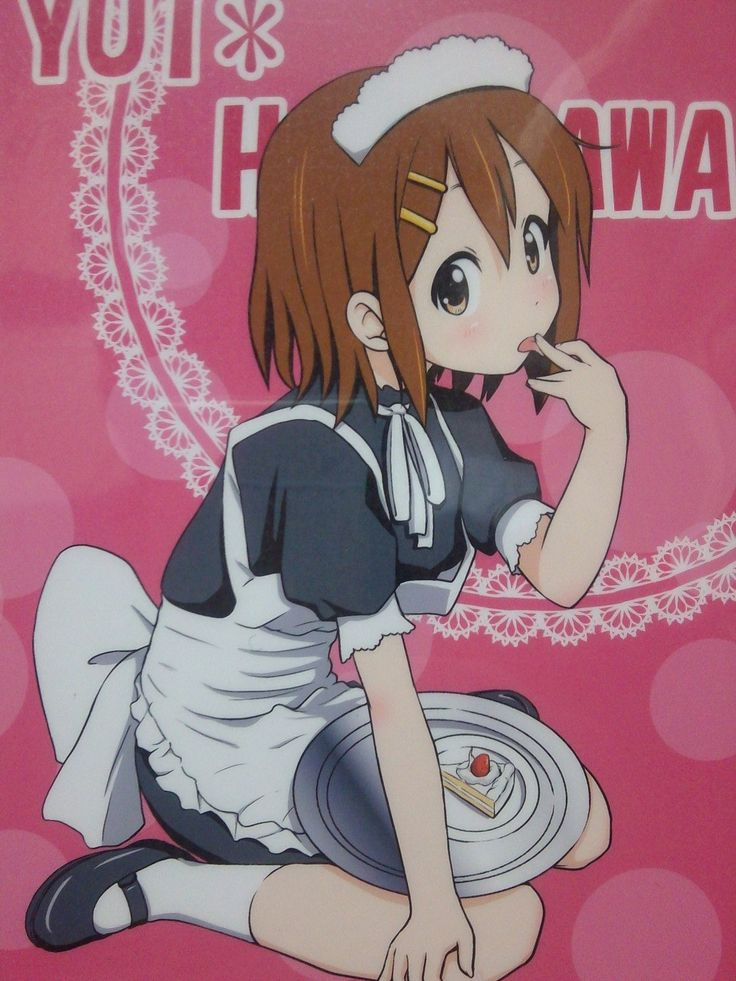
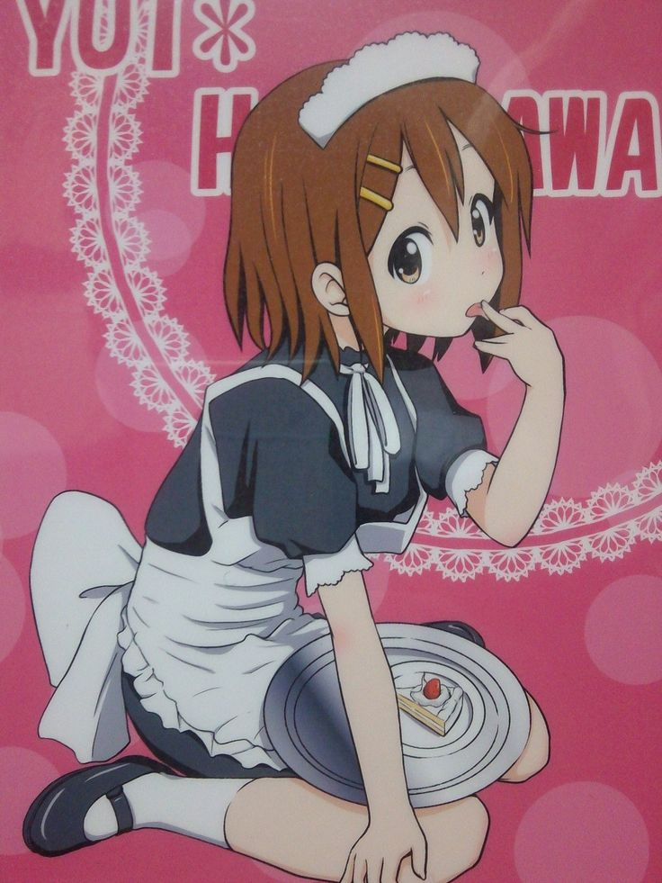

ALL ABOUT K-ON!!!!

 

Yui Hirasawa
Hobbies:
- Her hobby is sleeping with her guitar named "Gitah"
- Hugging things (pillows, Ui, Gitah, sometimes Azusa if she’s feeling squishy).
- Eating cake faster than anyone else in the club.
- Professional sleeper is her expertise
- Being lazy and dumb at school she is good but good at clutching her grades
- She always agree in wearing costume
- Spacing out is her expertise thats why her sister always worrying about her
- Forgetting her Guitar
- Tripping over nothing but somehow landing in perfect comedic timing.
- Cutting her bangs cause of boredom
Favorites:
- Food: Anything sweet (cake is #1, especially strawberry shortcake).
- Drink: Tea with snacks during club time
- Thing: Her guitar “Gitah” .
- Person: Ui (her younger sister, aka her caretaker, chef, and life manager).
- Season: Summer (less school, more lazing around).
- Music: Pop-rock, fun lighthearted songs (but she respects heavy rock thanks to Sawako)
- Activity with friends: Tea time + snacks before actually practicing.
Mio Akiyama
Hobbies
- Songwriting & Lyric Writing (she often writes the band’s lyrics, though she gets embarrassed about it).
- Reading (especially literature and poems).
- Playing Bass (her main instrument, left-handed Fender Jazz Bass)
- Singing (she’s the backup/occasional lead vocalist, though stage fright makes her nervous)
- Studying (she’s diligent with schoolwork and usually scores high on exams)
- Collecting weird things (ironically, she likes cute things like plushies but hides them because she’s shy about it).
- Writing in her notebook (she keeps a diary and jots down ideas, though she’s protective of it).
Favorites:
- Food: Rice, fish, healthy meals (she’s not into sweets as much as Yui or Mugi).
- Drink: Tea (but nothing too bitter).
- Thing: Her bass (Fender Jazz Bass Sunburst, left-handed).
- Person: Ritsu (her childhood friend, though Ritsu teases her endlessly ).
- Season: Probably spring or autumn—mild and calm, like her personality.
- Music: Bands with good bass lines; she admires strong musicianship.
- Animal: She loves cute ones like rabbits and cats (but don’t scare her with bugs).
- Color: Blue/navy tones (often associated with her)
- Activity with friends: Practicing seriously (…until Ritsu derails it), drinking tea after club, and quiet moments rather than chaos.
Ritsu Tainaka
Hobbies:
- “Accidentally” forgetting to practice but still calling herself “responsible president.”
- Jump-scaring Mio just to watch her scream.
- Being LOUD in every situation (classroom, clubroom, middle of the street…).
- Spicy snack demolisher if it crunches and burns, Ritsu’s already eating it.
- Professional nap avoider (why nap when you can annoy Mio instead?).
- Turning everything into a drum (desks, walls, heads, probably Gitah too).
- Pretending to be serious (for 5 seconds max).
Favorites:
- Food: “Anything that makes Mio cry when it’s too spicy.”
- Drink: “Whatever goes down fast when I’m choking on said spicy food.”
- Thing: Her drumsticks… which she also uses as back scratchers.
- Person: Mio (“my partner in crime, my victim, my everything ”).
Tsumugi Kotobuki
Hobbies:
- Secretly funding the entire club’s cake addiction with her rich-girl money
- Bringing “just a little snack” that looks like a full-on wedding buffet
- Studying normal people life like a scientist (“Wow, people go to convenience stores?!”)
- Watching Yui and Ritsu’s chaos like it’s live theater
- Accidentally breaking pianos because she plays too passionately
- Shipping her friends together in her imagination ( she loves lesbians)
- Practicing her “surprised gasp” face for whenever something wild happens
Favorites:
- Food: Every single dessert in Japan (and probably France too).
- Drink: Tea so fancy it has a family tree.
- Music: Anything with sparkly synths ( also death metal,).
Azusa Nakano
Hobbies:
- Playing guitar (very passionate about improving)
- Practicing scales and technique diligently
- Listening to music (especially rock & jazz)
- Spending time with her Light Music Club seniors
- Going to live music performances
- Studying hard (more disciplined than her senior yui)
Favorites:
- Food: Strawberries and sweets
- Drink: Tea and juice
- Instrument: Fender Mustang guitar
- Animal: Cats (she owns two in the manga: Azunyan #1 and #2)
- Season: Summer (light, fun, but also perfect for practice)
- Music: Rock bands with skilled guitarists
- Activity with friends: Practicing together, but also enjoying tea time (even if she complains about slacking ).
Jun Suzuki
Hobbies:
- Loudly complaining about wanting sweets while Azusa is trying to practice
- Air-bassing dramatically in the clubroom
- Pretending to be the “cool senior” but ending up as the comedy relief
- Third-wheeling Ui + Azusa’s “serious practice sessions” by bringing snacks
- Secretly wanting to be in HTT( ho-kago tea time band member but acting too “chill” to admit it)
- Being the chaos element that rivals Ritsu’s energy
Favorites:
- Food: “Anything free, especially if Mugi brought it.”
- Drink: Whatever’s in the fridge.
- Thing: Crashing into tea time even when she wasn’t invited
- Music: Anything with a sick bassline she can nod her head to
- Activity with friends: Pretending to be annoyed at Azusa’s strictness but loving it anyway.
Ui Hirasawa
Hobbies:
- Being the “mom” of the Hirasawa household because Yui would 100% burn the kitchen down.
- Secretly cosplaying as Yui to prank her friends (and getting away with it!)
- Fixing Yui’s life on a daily basis (feeding, dressing, waking her up, basically being her full-time manager ).
- Collecting “Yui fails” like a scrapbook
- Acting innocent while low-key enjoying Azusa’s tsundere moments
Favorites:
- Food: “Anything that Yui cook doesn’t burn.”
- Drink: Hot tea, because chaos is easier to handle when you’re calm
- Thing: Looking exactly like Yui and confusing everyone
- Music: secretly vibing to HTT but pretending she’s chill
- Activity with friends: Watching Jun and Azusa argue while she just sips tea like a queen
Sawako Yamanako
Hobbies:
- Playing guitar (she used to be in a death metal band)
- Designing costumes for the Light Music Club
- Shopping for clothes and accessories
- Listening to music (especially rock and metal)
- Watching her students grow and succeed
- Collecting blackmail material (photos of the girls looking goofy).
Favorites:
- Food: Cake, chips, chocolate basically, anything the girls bring to the club
- Drink: coffee
- Thing: Watching her students suffer in cosplay while she giggles.
- Music: Death metal, but she also low-key enjoys cheesy pop.
- Activity with students: Teasing Mio until she screams.
Nadako Maanbe
Hobbies:
- Babysitting Yui her whole life (professional “Yui wrangler” since kindergarten)
- Organizing events as part of the student council
- Spending time with Yui and her friends
- Writing “Why am I friends with Yui again?” in her diary every night
Favorites:
- Food: “Anything normal that isn’t covered in frosting like Mugi’s tea snacks.”
- Drink: Tea, because coffee would make dealing with Yui worse.
- Thing: A nice, quiet day with no Yui disasters (rare).
- Person: Yui… even if she drives her insane